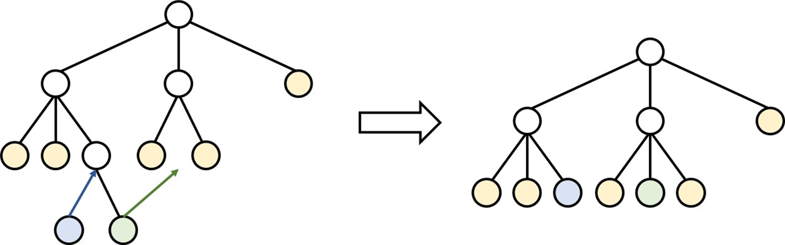
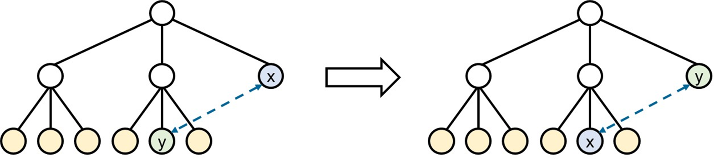
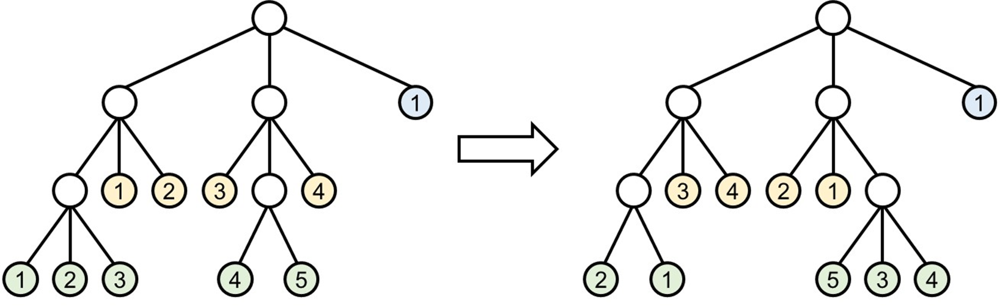
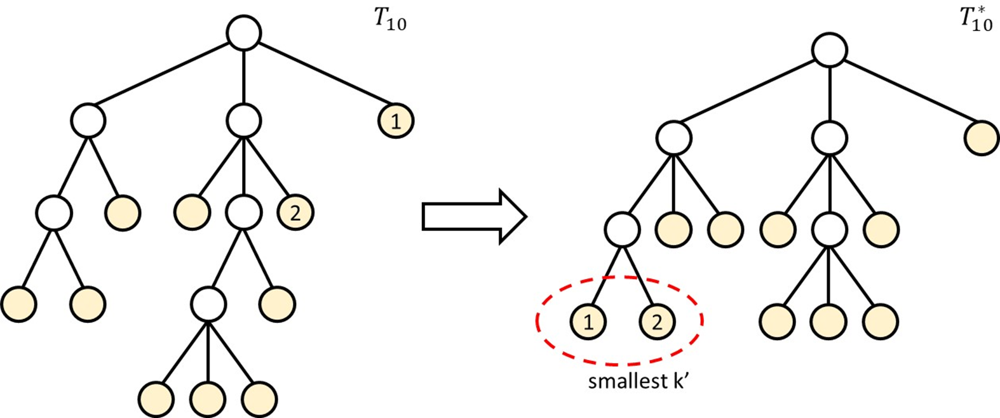

C. Pecola or Treat
- Online Judge: 1632
- Author: 劉永福
Problem Description
一個賽程 (Schedule) 裡面包含多個決鬥 (Battle)，每次決鬥最多只能有 人參加，且有一位會進行之後的賽程。
定義一個賽程的成本 ，其中 為第 參賽者在賽程 中，最多需要參加的決鬥數量。
你需要找到一個賽程 ，使得 是最小的。
輸出 以及描述該賽程。
根據以上敘述，可以發現一個賽程等同於 元樹，每個參賽者可以視為葉子節點，而 則是每個葉子節點的深度。
A schedule contains multiple battles, and each battle can have a maximum of participants. Additionally, there is a subsequent schedule for the winner of each battle.
Define the cost of a schedule , where is the maximum number of battles participant needs to attend in schedule .
Your task is to find a schedule such that is minimized.
Output and describe the corresponding schedule.
Based on the description above, a schedule can be considered equivalent to a -ary tree, where each participant is a leaf node, and represents the depth of each leaf node.
Chinese Editorial
Subtask 1
當 時，不需要進行決鬥就能決定出勝者， 。
其餘狀況，因為 ，所有參賽者都可以在一次決鬥中就決定勝者，且至少都需要進行一次決鬥，所以最小的 。
Subtask 2
仔細觀察題目的敘述，可以將 視作 Huffman encoding 中的頻率， 視作編碼的長度。
那麼 就完全等同於有 個字元的 Huffman Encoding 問題。
因此，我們可以像講義中所提到的，將節點中頻率最小的兩個節點 挑出並組成一個新的節點 ，且其頻率為 。不斷重複，直到節點數 。
使用 priority queue 去找到並移除過程中最小頻率的兩個節點 ，再將新節點 放進去。這過程就等同題目的，挑選 進行決鬥，決鬥的勝者作為 進行剩下的賽程。
Subtask 3 & 4
接著將題目擴展到 ，一個直覺的想法是用跟 Subtask 2 一樣的操作，每次從 priority queue 裡面挑出 個權重最小的節點，將這些節點的總和作為新節點 的權重，最後放回 priority queue。
然而這樣做真的是最好的嗎？套用到 Sample Case 2，會發現得到的答案不是最佳解。 不過稍微觀察，會發現在 的時候 (Subtask 3)，直接挑權重前 小的能保證有最佳解。
接著進一步分析，對於最佳的賽程 ( 元樹 )，我們能有以下幾個 Claim
-
Claim 1: 所有深度不是最深的節點，其 Sibling 節點的數量必須為 ，且子節點要有兩個以上
可以簡單地觀察出，如果不是的話，將深度更深的節點往上移可以使 更小。

-
Claim 2: 對於任意葉子節點 ，若，則
類似地，如果不是的話，可以將兩葉子節點的位置交換，能使得 更小。

-
Claim 3: 對於任意葉子節點，若將 移到同深度的其他位置，答案不變
因為深度一樣，所以任意交換不會影響 的結果

透過以上幾點觀察，試著猜出以下的 Greedy 演算法，並證明他是對的
Greedy Algorithm
A(a, k) // a is set of node()
S := a
cost := 0
while |S| ≠ 1 :
Z := new node()
Z.childs := ∅ // set of node()
Z.val := 0
while |Z.childs| < 2 or |S| % (k - 1) != 0 : // at least 2 in one battle
minNode := node with smallest val in S
Z.childs = Z.childs ∪ minNode
Z.val += minNode.val
S := S - minNode
cost += Z.val
S := S ∪ Z
root := the remained node in S
return root, cost
證明固定一個 ，對於任意 個參賽者，我們用 做出來的賽程會是最佳解：
令 是用 做出來的賽程， 是最佳賽程，我們想證明
我們可以使用歸納法
- base:
- ，不需要進行比賽
- ，只需要一場比賽
- 針對以上兩種狀況， 顯然能做出最好的賽程。
- induction:
-
對於任意 的參賽者組合成立，我們都有
-
用反證法證明: 假設存在
-
我們可以根據Claim 1 & Claim 2 & Claim 3，將 轉成新的賽程 ，在 中權重前 小的參賽者會參加一場決鬥，其中 。且

令 為權重前 小的集合
令 為權重前 小的總和
令 ，
轉成賽程 後，我們能保證 一定會存在由 組成的一場決鬥；同樣地，按照 做出來 ，也一定會存在由 組成的一場決鬥。
我們移除掉在 中，由 構成的決鬥，變成 。可以得到滿足 的解
直接用 對 做出來的賽程，我們稱為
而我們知道 ，且因為 ，所以我們可以推導出
這與我們的假設 矛盾
因此我們可以知道
-
-
English Editorial
Subtask 1
When , no battles are needed to determine the winner, and .
For other cases where , all participants can determine the winner in a single battle. At least one battle is required, so the minimum .
Subtask 2
By carefully observing the problem description, can be regarded as frequencies in Huffman encoding, and can be viewed as the length of the encoding.
For , this is equivalent to the Huffman Encoding problem with characters.
Therefore, as mentioned in the lecture notes, we can select the two nodes with the smallest frequencies, and , and create a new node with a frequency of . This process is repeated until the number of nodes is less than or equal to 1.
Use a priority queue to find and remove the two nodes with the smallest frequencies, and , and then insert the new node . This process is equivalent to selecting and for a battle, and the winner continues in the remaining schedule.
Subtasks 3 & 4
Next, extend the problem to . An intuitive approach is to perform similar operations as in Subtask 2. Each time, select nodes with the smallest weights from the priority queue, use their sum as the weight of the new node , and finally, insert it back into the priority queue.
However, is this truly the best approach? Applying it to Sample Case 2, we find that the obtained answer is not optimal. Yet, with a closer observation, it is noted that when (Subtask 3), selecting the smallest weights directly ensures the optimal solution.
Continuing with a more in-depth analysis, for the optimal schedule (-ary tree), we have the following claims:
-
Claim 1: For all non-deepest nodes, the number of sibling nodes must be , and each node must have at least two child nodes.
It can be observed that if this is not the case, moving a deeper node up can reduce .
-
Claim 2: For any leaf nodes and , if , then .
Similarly, if not, swapping the positions of the two leaf nodes can reduce .
-
Claim 3: For any leaf node, moving it to another position at the same depth does not change the answer.
Since the depth is the same, any exchange does not affect the result of .
Based on the observations above, let's attempt to infer the following Greedy algorithm and provide a proof of its correctness.
Greedy Algorithm
A(a, k) // a is set of node()
S := a
cost := 0
while |S| ≠ 1 :
Z := new node()
Z.childs := ∅ // set of node()
Z.val := 0
while |Z.childs| < 2 or |S| % (k - 1) != 0 : // at least 2 in one battle
minNode := node with smallest val in S
Z.childs = Z.childs ∪ minNode
Z.val += minNode.val
S := S - minNode
cost += Z.val
S := S ∪ Z
root := the remained node in S
return root, cost
To prove that for a fixed , for any participants, the schedule produced by algorithm is optimal:
Let be the schedule produced by , and be the optimal schedule. We want to prove that .
We can use induction:
- Base:
- For , no competition is needed.
- For , only one competition is needed.
- In both cases, can obviously produce the best schedule.
- Induction:
- For any combination of participants where , we have .
- Prove by contradiction: Suppose there exists .
-
According to Claim 1, Claim 2, and Claim 3, we can transform into a new schedule , where the smallest-weight participants participate in a battle, and . Additionally, .
Let be the set of the smallest weights.
Let be the sum of the smallest weights.
Let , .
After transforming to schedule , we can guarantee that will have a battle composed of participants from . Similarly, according to , the schedule will also have a battle composed of participants from .
We remove the battle composed of in , resulting in . This provides a solution satisfying .
By directly using to produce the schedule for , denoted as , we know that , and because , we can deduce that .
This contradicts our assumption .
-
Solutions
Solution
#include <iostream>
#include <vector>
#include <queue>
#define rep(i, a, b) for (int i = a; i < b; i++)
#define rrep(i, a, b) for (int i = a; i <= b; i++)
#define val first
#define idx second
using namespace std;
using ll = long long;
using pli = pair<ll, int>;
int main()
{
cin.tie(0);
ios_base::sync_with_stdio(0);
int n, k, rating;
priority_queue<pli, vector<pli>, greater<pli>> pq;
/**************** input ****************/
cin >> n >> k;
for(int i = 1; i <= n; i++)
{
cin >> rating;
pq.push({rating, i});
}
/**************** build schedule ****************/
vector<vector<int>> battles;
ll ans = 0;
int nodeIdx = n;
while (pq.size() != 1) // until only one member left
{
ll sum = 0; // value of the new battle
battles.push_back({}); // new battle
while (battles.back().size() < 2 || pq.size() % (k - 1)) // put the k' smallest nodes into battles
{
pli node = pq.top();
pq.pop();
sum += node.val;
battles.back().push_back(node.idx);
}
ans += sum;
pq.push({sum, ++nodeIdx});
}
/**************** output ****************/
cout << ans << '\n';
cout << battles.size() << '\n';
for(int i = 0; i < battles.size(); i++)
{
cout << battles[i].size() << ' ';
for(int j = 0; j < battles[i].size(); j++)
{
cout << battles[i][j] << " \n"[j == battles[i].size() - 1];
}
}
return 0;
}
Expected / Reality
- Difficulty: ★★★☆☆